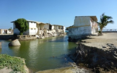
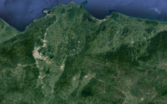

GEORespect Geomorfología aplicada como herramienta esencial para la planificación y el desarrollo inteligente del uso de la tierra
Lema: La utilización segura y atenta del paisaje basada en el respeto de los procesos naturales que la conforman.
La mayor parte de la actividad humana está ligada a la superficie o a su entorno inmediato. Esto significa que la naturaleza de la superficie terrestre (morfología, geología, cobertura de la tierra, etc.) y los procesos que crea tienen un impacto inmediato en la actividad humana y en la forma de uso de la tierra. Se deduce que comprender la evolución de la superficie terrestre es requisito previo esencial para su uso efectivo y respetuoso con el medio ambiente.
NOTICIAS: GEORESPECT s.r.o. participa actualmente en el proyecto «PROGRAMA DE ADAPTACIÓN DE SISTEMAS AGRÍCOLAS EN LA CUENCA HIDROGRÁFICA DE LA SIERRA DE HAMBARICHO — ASAP EN HAMBARICHO», que ejecuta la organización humanitaria People in Need con el apoyo de la Agencia Checa de Desarrollo.

Análisis geomorfológico del terreno
Características del análisis geomorfológico del terreno
El análisis geomorfológico del terreno se basa en la demarcación de accidentes geográficos individuales y en la evaluación de su formación y edad aproximada; además, principalmente, en la interpretación de un modelo digital del terreno. Este estudio puede complementarse con la evaluación de imágenes aéreas y datos de teledetección o con la documentación de campo.
Mapa geomorfológico como salida del análisis geomorfológico del terreno
El mapa geomorfológico representa una imagen generalizada del desarrollo del área. Las formas de relieve posteriormente circunscritas se dividen en grupos especificados por su origen: i) formas estructurales y tectónicas, ii) formas de denudación, iii) formas de acumulación, iv) formas antropogénicas. Las formas individuales se dibujan en una base cartográfica adecuada en forma de polígonos, líneas y, eventualmente, puntos. La escala del mapa incide en el grado de detalle.
Uso práctico del análisis geomorfológico del terreno
Los resultados del análisis sirven como datos básicos necesarios para analizar la vulnerabilidad del territorio frente a procesos naturales como inundaciones, erosión, deslizamientos, terremotos, etc.

Análisis de los peligros naturales
Evaluación de la vulnerabilidad del territorio por procesos naturales
La creciente urbanización del campo y el desarrollo de la infraestructura son causa de la interacción incesante entre la actividad humana y diversos procesos naturales. La subestimación del impacto de esta interacción puede dar lugar a daños tales como deslizamientos, inundaciones o terremotos. La importancia del análisis de la vulnerabilidad del territorio radica en la localización y caracterización de aquellos procesos naturales que presentan riesgos agudos o potenciales.
El uso del análisis de peligros naturales
Prevención — uso de las salidas para crear nuevos planes de ordenación territorial, planes ambientales, proyectos inmobiliarios y de construcción y planes de defensa civil.
Solución de los problemas actuales — uso de las salidas para proponer medidas correctivas y de seguridad que reduzcan el peligro de erosión del suelo, deslizamientos, inundaciones, etc.

Referencias
-
Programa de adaptación de los sistemas agrícolas en la cuenca hidrográfica de la Sierra Hambaricho — ASAP en Hambaricho
Ubicación: Región Sidama, Etiopía
Contratante: ONG People in Need — Agencia de Desarrollo de la República Checa
Objetivo: Análisis de los riesgos geológicos y medioambientales en la zona de la Sierra Hambaricho.
-
Desarrollo participativo del paisaje productivo en la región de Sidama, Etiopía, II
Ubicación: Región Sidama, Etiopía
Contratante: ONG People in Need — Agencia de Desarrollo de la República Checa
Objetivo: Estudio biofísico (riesgos geológicos), exploración y documentación enfocadas en las características geomorfológicas, litológicas y geodinámicas locales a fin de conservar y gestionar los recursos de agua y suelo hacia una agricultura sostenible y la protección de los recursos naturales.
-
Investigación y selección de emplazamientos adecuados para la construcción de instalaciones de almacenamiento subterráneo de pasivos radioactivos en la República Checa
Contratante: Autoridad de Repositorios de Residuos Radiactivos (SÚRAO)
Ubicación: República Checa
Objetivo: Consultoría especializada en geología y geomorfología para la investigación y selección de emplazamientos adecuados para la construcción de instalaciones de almacenamiento subterráneo de pasivos radioactivos.
-
Interpretación de los datos geomorfológicos para los visitantes del Geoparque Šumava Real
Ubicación: Región de Pilsen y Región de Bohemia Meridional, República Checa
Objetivo:
- Análisis geomorfológico del terreno e interpretación de datos topográficos por escaneo LIDAR.
- Mapa geomorfológico del terreno (500 km²).
- Aplicativo digital.
-
Evaluación preliminar de peligros geológicos mediante el análisis geomorfológico para el proyecto inmobiliario «Miami Beach Peruano»
Ubicación: Distrito Comandante Noel, Provincia de Casma, Región Áncash, Perú
Objetivo: Evaluación preliminar para identificar peligros geológicos existentes en un contexto de hasta 50 km² mediante análisis geomorfológico en gabinete: 20 km² (escala 1:5000), 30 km² (escala 1:25 000).
-
Estudio de vulnerabilidad por peligros geológicos tras sismo de 7,5 para alternativas de trazado viario a nivel conceptual — sector Aserradero km 265+390 al km 275+050, Región Amazonas, Perú
Tipo del proyecto: Proyecto de la concesionaria IIRSA NORTE
Ubicación: Sector Aserradero, Distrito de Jamalca, Provincia de Utcubamba, Región Amazonas, Perú
Objetivo del proyecto:
- Levantamiento topográfico LIDAR con UAV del área de estudio (hasta 60 km²).
- Creación del modelo digital del relieve (MDR) en hasta 60 km² a escala 1:10 000.
- Análisis geomorfológico del terreno e interpretación de imágenes satelitales y MDR.
- Relevamiento de campo de documentación geológica y geomorfológica de forma visual.
- Análisis de susceptibilidad del territorio frente a peligros naturales.
- Con base en zonas de alta vulnerabilidad, plantear al menos tres alternativas de trazo para Aserradero a nivel conceptual.
- Presentar propuesta de medidas de protección frente a los procesos naturales.
-
«Salida del río Piura hacia el océano Pacífico» — informe para el plan maestro de control de inundaciones del río Piura — Autoridad para la Reconstrucción con Cambios (ARCC)
Recomendación de una ruta adecuada para la descarga de aguas de inundación al mar mediante análisis geomorfológico del terreno.
Proyecto de la Autoridad para la Reconstrucción con Cambios, Gobierno del Perú.
Subcontrato de GEORESPECT s.r.o. para ARUP PERÚ. -
Compilación de mapas geológicos e hidrogeológicos a escala 1:1 000 000 para todo el territorio de Etiopía
GEORespect, como subcontratista del Servicio Geológico Checo, implementa:
- Desarrollo de una base topográfica para el mapeo geológico a escala 1:750 000 del territorio de Etiopía.
- Análisis morfo-tectónico del territorio de Etiopía a escala 1:750 000.
El proyecto está financiado por la Agencia Checa de Desarrollo.
-
Análisis de la vulnerabilidad de la cuenca baja del río Piura por inundaciones y posibilidades de reducirla — proyecto piloto de análisis de vulnerabilidad ante desastres naturales en el Perú
El proyecto analizó 2500 km² de la cuenca baja del río Piura en términos de vulnerabilidad a inundaciones. La implementación incluyó:
- Evaluación de los impactos del fenómeno El Niño de 2017.
- Estudio de susceptibilidad por inundaciones a escala 1:25 000.
- Propuesta de medidas para reducir la vulnerabilidad del territorio.
Ejecutado con apoyo financiero de la Agencia Checa de Desarrollo.
-

Reporte preliminar de reconocimiento geomorfológico de las zonas afectadas por el fenómeno de El Niño en la cuenca baja de los ríos Piura y Chira
-

Mapa geomorfológico de la ETE — zona sur a escala 1:10 000 (República Checa)
El propósito del contrato fue crear un mapa geomorfológico de la parte sur de la central nuclear de Temelín (32 km²) a partir del modelo digital del terreno. El objetivo básico fue definir formas y unidades geomorfológicas y evaluar los procesos exodinámicos actuales.
GEORespect lo ejecutó como subcontratista de AQUATEST en el marco del contrato de evaluación de información geológica para almacenamiento de residuos nucleares en el polígono ETE — Sur. El patrocinador es la estructura organizativa de la República Checa — Autoridad de Repositorios de Residuos Radiactivos.
-

Evaluación de la vulnerabilidad física del territorio Miramar–Vichayal (región de Piura, Perú) para un proyecto agrícola
El objetivo fue evaluar los procesos exodinámicos actuales con especial atención a peligros naturales potenciales (inundaciones, erosión, deslizamientos y salinización) en 12 000 ha. Entregables: mapa geomorfológico, mapa de susceptibilidad y panorama de zonas aptas para agricultura.
Trabajo producido para Agroetanol Pacífico S.A.
-

Cartografía y evaluación geomorfológica de municipios seleccionados de Honduras para el proyecto «Gestión de Riesgos de Desastres» (PGRD)
El contrato comprendió mapas geomorfológicos de 14 municipios de Honduras (aprox. 7000 km²) a partir del modelo digital del terreno. El objetivo fue definir formas de relieve y evaluar procesos exodinámicos con foco en peligros naturales.
Subcontrato para COPECO.

Contacto
- Compañía
- GEORespect Ltd.
- Dirección
- Kovářská 1414/9, 190 00 Praga 9, República Checa
- N.º de identificación fiscal (IČO)
- 05894352
- N.º de IVA
- CZ05894352
- Forma jurídica
- Sociedad de responsabilidad limitada
- Registro mercantil
- C 272609 ante el Tribunal Municipal de Praga
- Data case
- s9dei6f
- Correo electrónico
- georespect@georespect.cz